It stays on your computer
Your manuscript, your recordings and your finished files are files on your own computer. Your account with us knows your email address and your plan, nothing about your book.
An audiobook studio for Windows
StellAurator is a program for your Windows computer. You bring the book. It helps you give every character a voice, record the reading yourself or let a computer voice read it, clean up every recording as you go, add music, check the finished chapters, and save the files Audible asks for. Your book never leaves your computer.
No credit card required. Nothing is charged when the trial ends, and your work stays yours.
Hear it
Each pair is the same recording: first as it was read, then in the voice of the character. The timing, the emphasis and the pauses are the reader’s own.
The studio
One window holds your script, your cast, every recording and the chapter timeline. The strip across the top shows where the book stands and what comes next. Nothing is ever lost: every recording is kept until you delete it, and every fix can be undone.
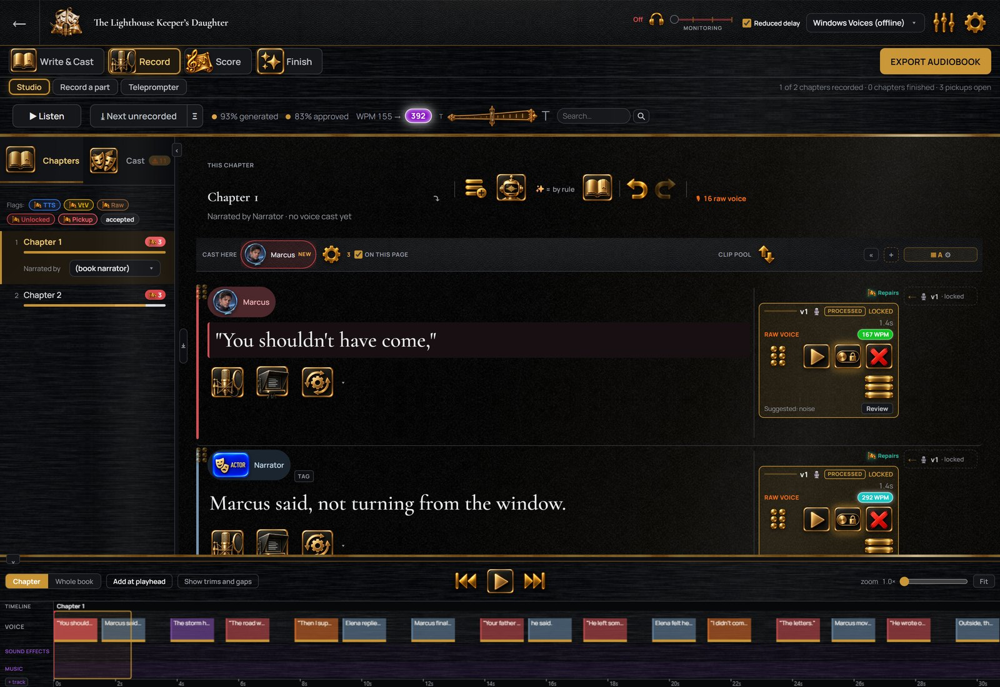
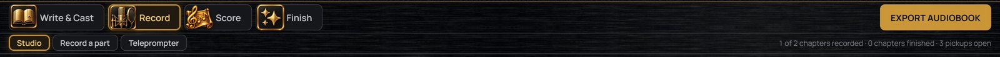
How it works
Every step happens in the studio. Stop whenever you like and pick up where you left off.
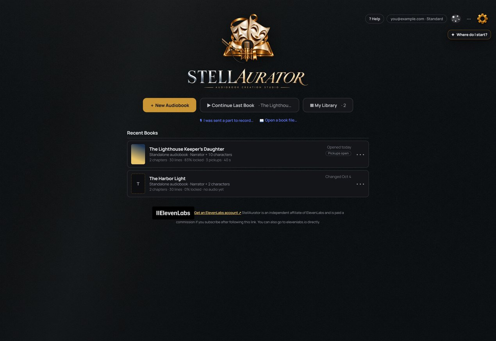
Your manuscript
StellAurator is a program on your own computer, not a website you upload a book to. We never see your manuscript or your recordings.
Your manuscript, your recordings and your finished files are files on your own computer. Your account with us knows your email address and your plan, nothing about your book.
If you connect a voice service or an AI service, its sign-in stays on your computer. Your words go only to the services you choose, under your own account with them.
When a trial or a plan ends, the studio switches to read-only: every book still opens and plays, and nothing is deleted. If you have ever paid, saving your finished files stays unlocked for the work you made.
Inside the studio
Casting
The cast list shows every speaker the studio found in your manuscript. Each one gets a color, a voice, and a face from a gallery of 445 portraits.
Open Character Tags, click a character and click a face, or press Best fit auto assign to do the whole cast at once. Anyone without a voice is flagged, and so is any line the studio was not sure about, so you know what is left before you record a line or have one read.
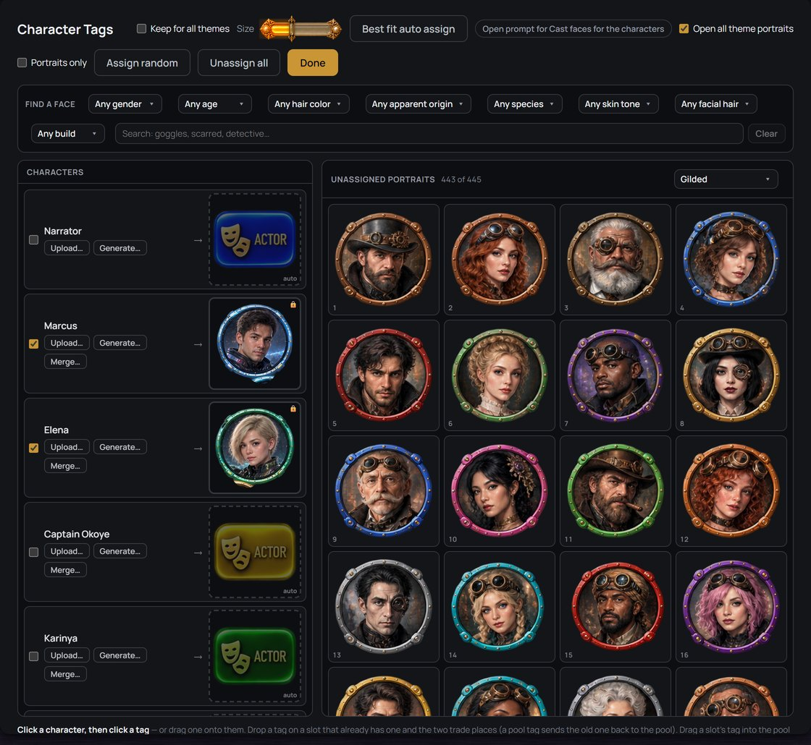
Recording
Your voice does not have to sound like the character. Open the on-screen script and act the scene out, every part, back to back. The line you are reading sits in a highlighted band; the rest of the chapter fades above and below it, moving at the pace you set.
Afterwards, if you want, a voice service can turn each line into the voice of the character who spoke it. Your timing, your emphasis and your pauses stay exactly as you read them.
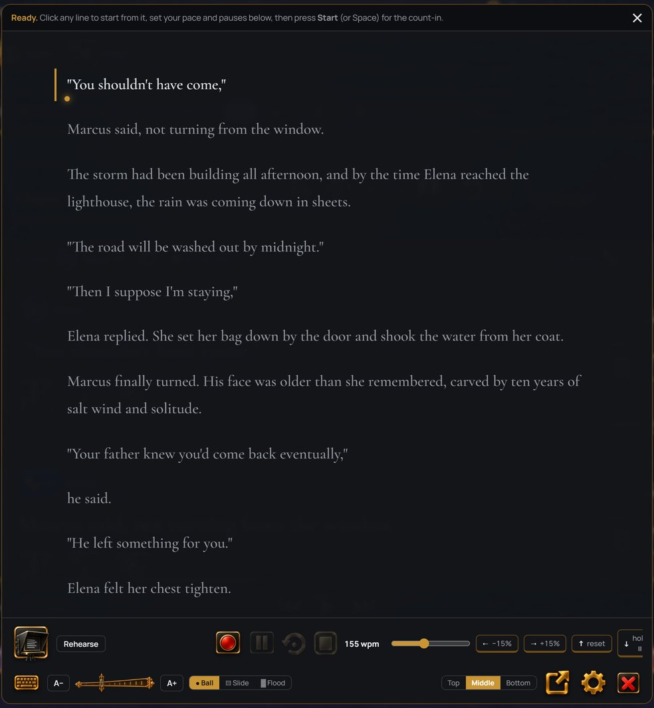
The studio talks to your microphone directly, through the software that came with it, so you hear yourself in your headphones with nothing added and the least possible delay. It shares your headphones with your other programs, so nothing else goes quiet while the studio is open. A Reduced delay switch gives you the shortest delay your equipment can manage.
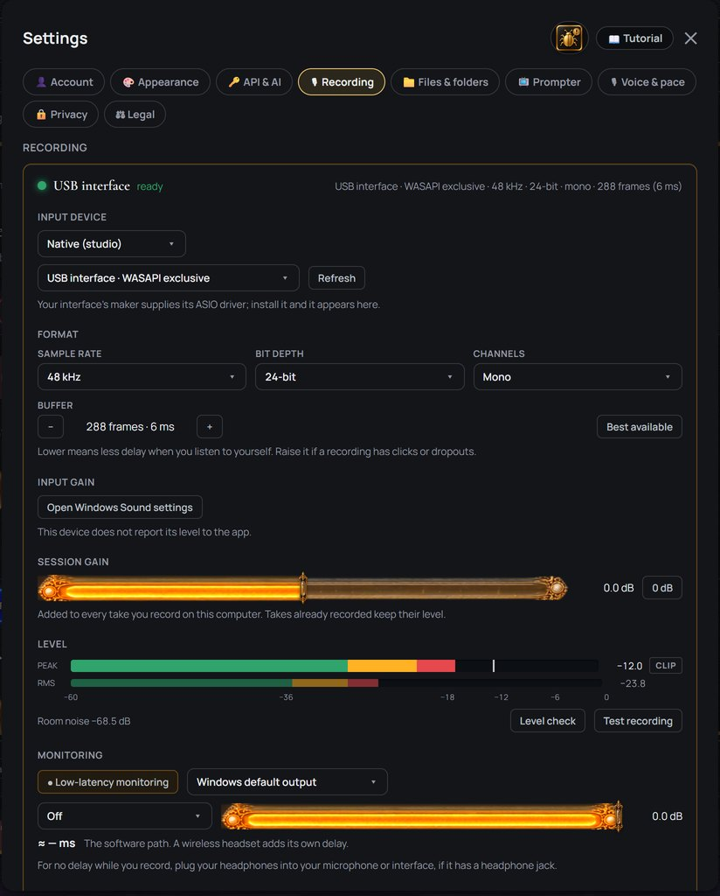
A chapter you recorded somewhere else becomes a chapter of recordings here. Drop the file in, say which chapter it is, and the studio cuts it into your lines: on the pauses, which is free and stays on your computer, or on the words, through a service you connect that can write down what it hears.
Your file is never changed. The studio only divides it. Where the recording and the manuscript disagree, you choose, line by line.
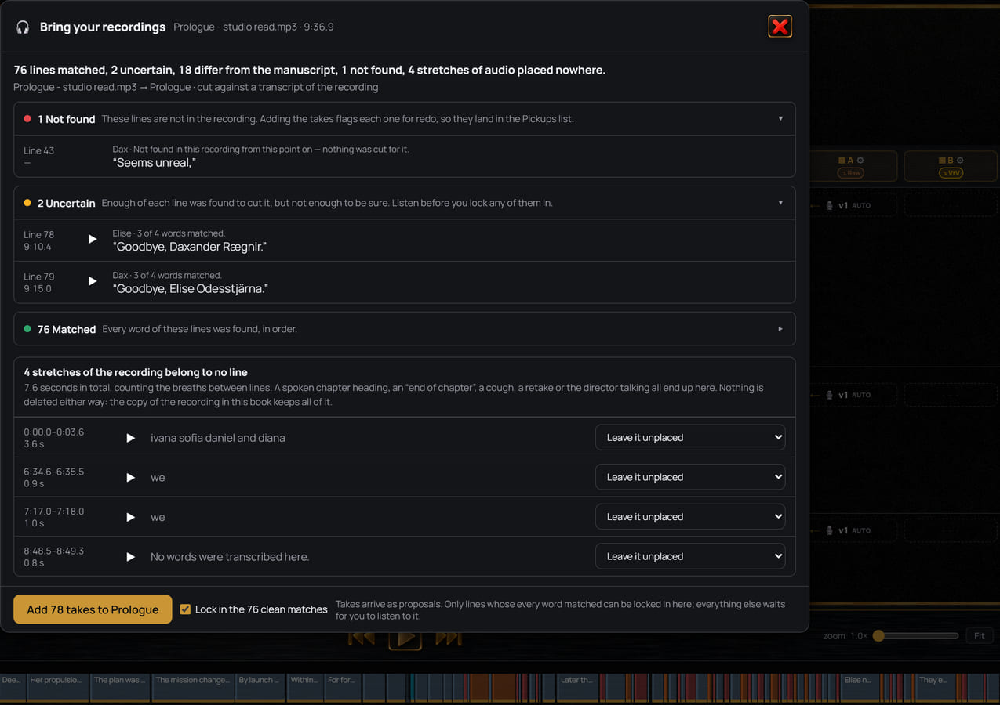
Clean-up
When a recording lands, the studio looks it over for clicks, pops, hard P sounds, breaths, hum and background hiss, and suggests a set of fixes under it. Press Review and you hear the fixed recording right away, before and after, with every fix marked on the sound wave. Drag across a breath you meant to keep and it is kept. Apply does the rest.
A fix is a layer over the recording, never a new file. Every fix can be switched off or removed later, and the recording underneath stays exactly what you recorded.
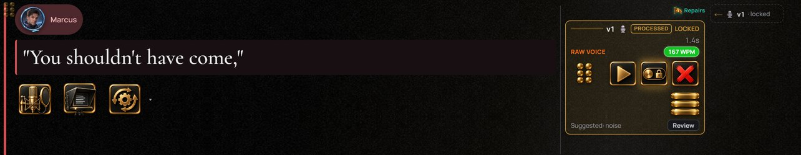
Each line keeps every recording. Have a computer voice read one, record another, change the voice on a third: each stays with its sound wave and length until you delete it, and you pick the one you want.
A spool is one complete reading of the book: the recording you picked for every line, wound together. Spools A and B let you build two complete readings of the same book side by side and save either one, so you can try a different narrator without losing the first.
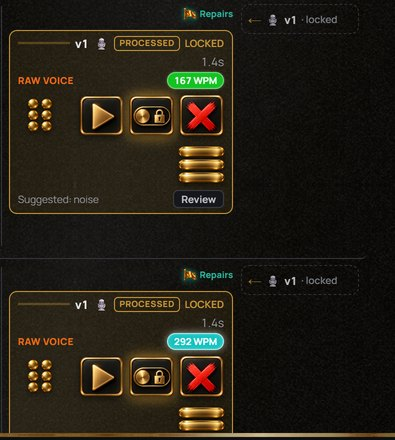
Every recording is tidied on its way in. Low rumble is removed, harsh S sounds are softened, and the loudness is evened out. Three sliders warm, sharpen or brighten the tone. Auto-level brings every recording to the same loudness without changing how you said it, or leaves the level alone.
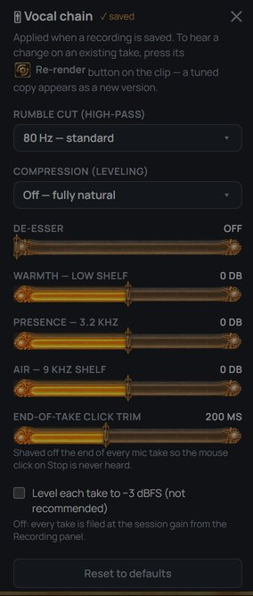
Fixing by hand
The repair screen is where the suggestions come from, open for you to use by hand on one recording or on every selected line. The tools sit on the right in groups. Choose one and it opens right under the recording, with before and after, a compare button, the settings, what has been done so far, and Keep.
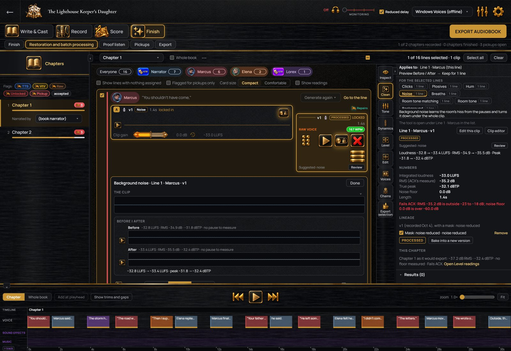
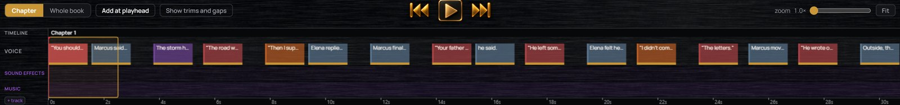
Music
Auto Score reads each chapter and finds the moments where music belongs: where a scene turns, where the tension peaks, where a quiet moment needs something underneath. For each one it writes a note with a mood and one sentence saying why, and ties it to the words it belongs to, so it stays in the right place when you edit the chapter.
Give the book a musical identity first: your own words, ready-made descriptions such as low droning dramatic or orchestral adventurous, and films, series and games whose music is close to what you want, which the studio turns into plain musical descriptions. Every piece of music is written to that identity, as loosely or as tightly as you set for each chapter.
Add your own music and sound effects under the lines: music runs under a scene, a short hit sits between two lines, and every one is a marker on the timeline. Print the list of music moments for a composer.
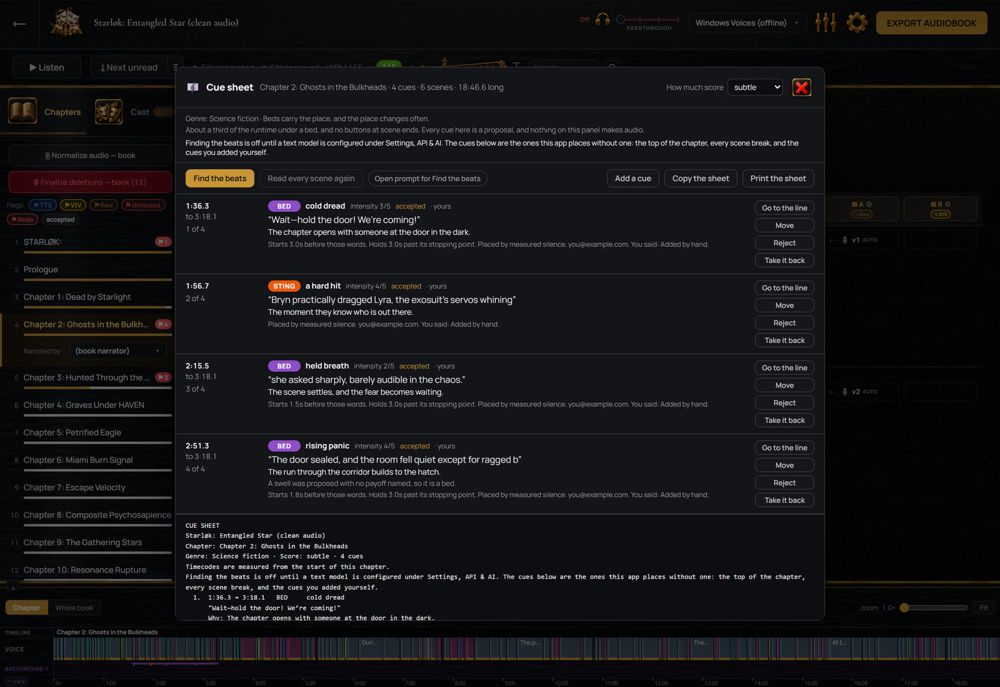
Finishing and saving
Choose what the book is for: Clean narration, Audiobook master for Audible’s ACX, Podcast, or your own recipe. The Finish screen then takes the chapter, or the whole book, through five steps. Diagnose reads every recording and tells you what it found, in words and numbers. Plan says what will be done. Apply does it, as layers you can remove. Check measures the chapter again and names the tool for anything still wrong. Export saves the files.
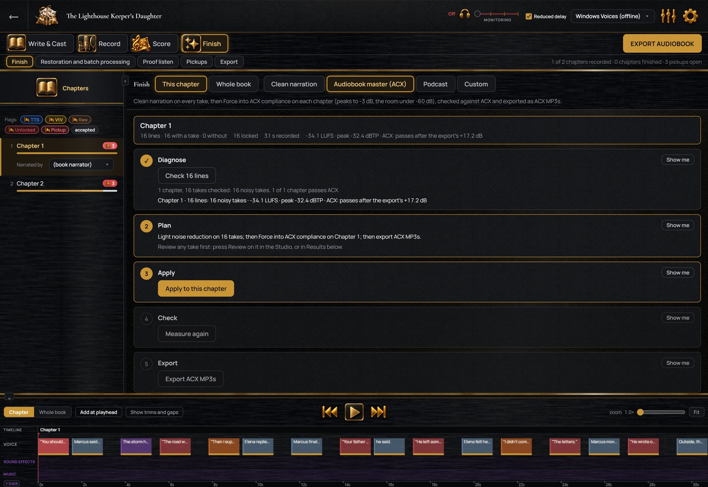
Proof listen plays one chapter exactly as it will be saved, pauses and all, and ticks off each line as you hear it. The pauses between lines are yours to set while you listen, for the whole book, and the next pause uses the new length right away.
When every line has been heard, Sign off chapter appears. Change a line afterwards and only that line needs another listen, so you always know what is left.
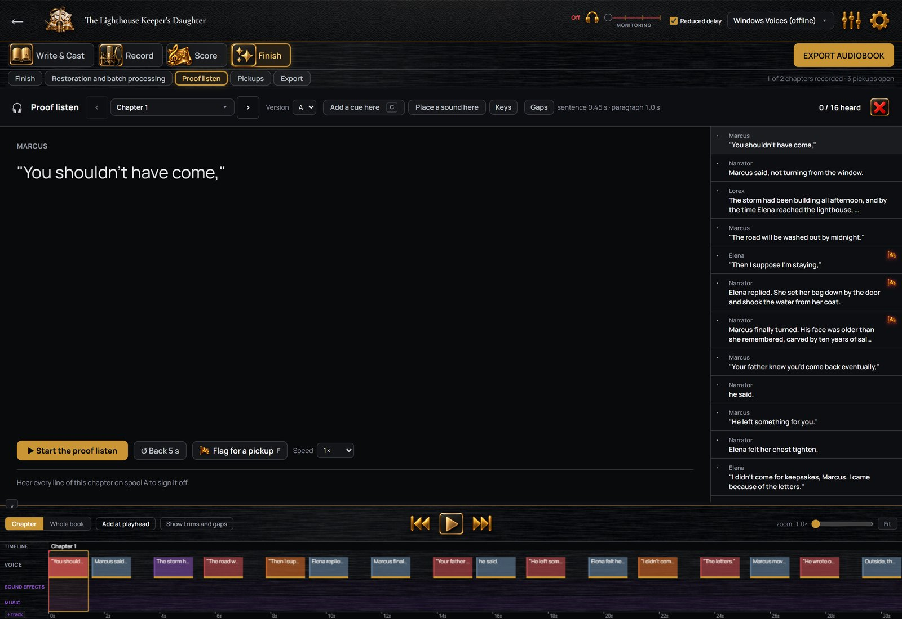
One button on every line, or the F key while anything is playing, marks a line to record again (narrators call this a pickup) without stopping playback. A background sound the studio found marks its line the same way.
Every marked line lands in Pickups. From there you can have the voice read them again, record them yourself, or send them to the actor who read them.
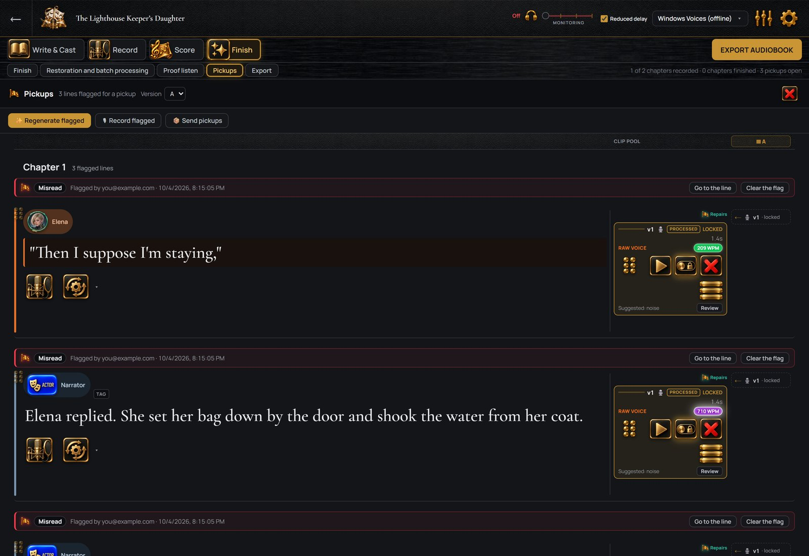
Save one file per chapter in exactly the form Audible’s ACX asks for, or one file with chapters and cover art for other stores, or both in one go. You choose which recordings are used: the ones you picked, the alternates, or a whole version of the book.
The pauses between lines are measured and corrected on the way out, so the pause after a sentence, after a paragraph and after a section break is exactly the length you set.
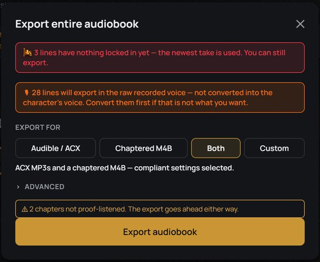
ACX does not accept computer-generated narration. A performance you recorded yourself and then changed into a character’s voice is still your performance, and the studio keeps your original recording alongside every changed one.
Every saved file says what it holds: a file with a computer-generated voice is marked as containing AI-generated narration; a file with a reading you recorded and changed is marked as containing a Speech to Speech modified human performance. The export window tells you how many lines are computer-read or voice-changed before you save. If a platform has given you written permission for a changed performance, attach the letter under Settings › Legal and a copy travels with the files.
Your computers
Sign in on a second computer and the first one asks whether to let it receive your books. Say yes and the two know each other from then on; there is no code to type.
Send a book straight to another of your computers and it arrives in that library, or keep a book in step across them. While your main computer is on, open its library from the other one and browse, listen and read your notes.
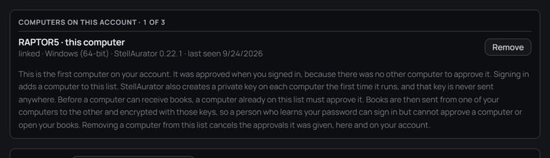
Voices
They come with the studio, need no account and no internet connection, and the voices built into Windows are there too. They read a line out loud for you. Nothing else in the studio needs a voice service: recording, clean-up, finishing, music, proof listening and saving all work with nothing connected.
Turning your own reading into a character’s voice needs a voice service that can do that: the services marked below, or one that runs on your own computer. You sign up with them directly and pay them directly; what you use there is separate from your StellAurator plan.
Get an ElevenLabs account if you want its voices. StellAurator is an independent affiliate of ElevenLabs and is paid a commission if you subscribe after following this link. You can also go to elevenlabs.io directly.
Olivia, Emma, Ava, Amelia, Charlotte, Mia, Sophia, Evelyn, Isabella and Harper. Noah, Oliver, Theodore, James, Henry, Liam, William, Elijah, Lucas and Mateo. Luna, Jazzy, Raven, Willow, Juniper and Phoenix.
The sign-in details for those services stay on your computer. A paid voice service bills you directly; what you use there is separate from your StellAurator subscription.
Connect an AI service if you like: Anthropic, OpenAI, xAI, Gemini, Groq, OpenRouter, or Ollama on your own computer. It can work out who is speaking, describe your cast, brief a narrator, and find where music belongs. You can read and change every instruction it is given.
Themes
Each theme changes the icons, the panels, the buttons, the sliders, the cast tags and the portrait art on every screen.
Twelve themes come with the studio, all included. More are on the way.
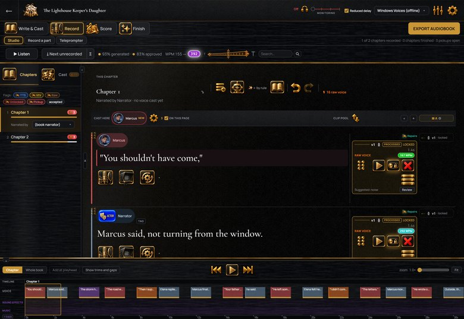
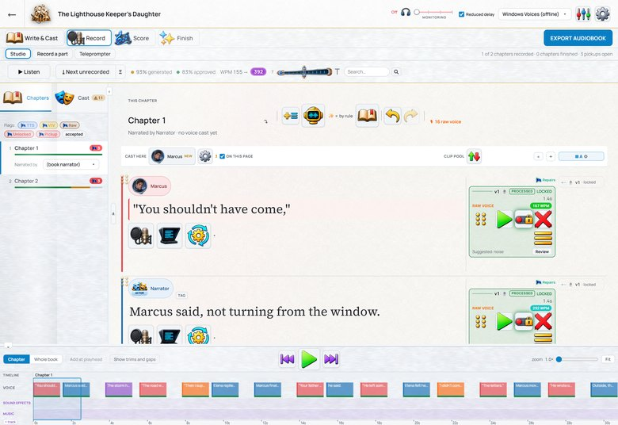
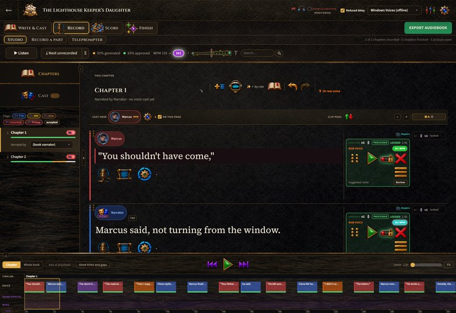
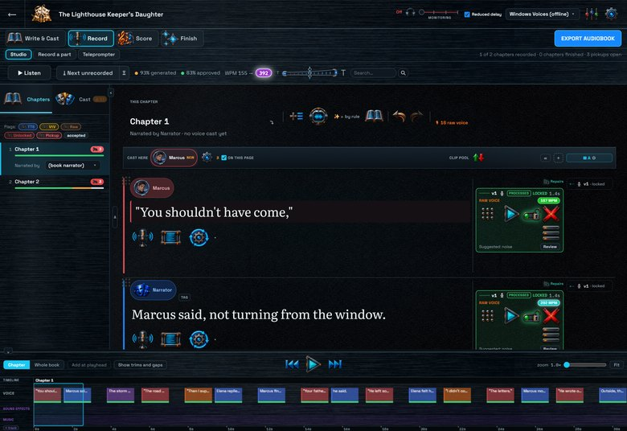
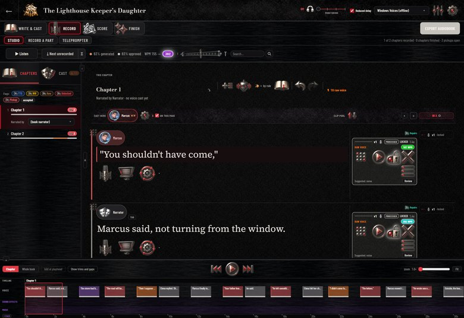
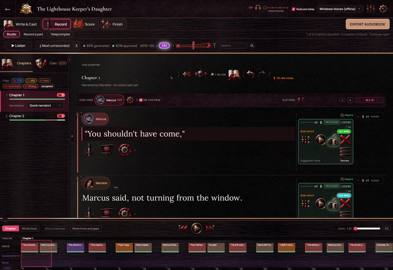
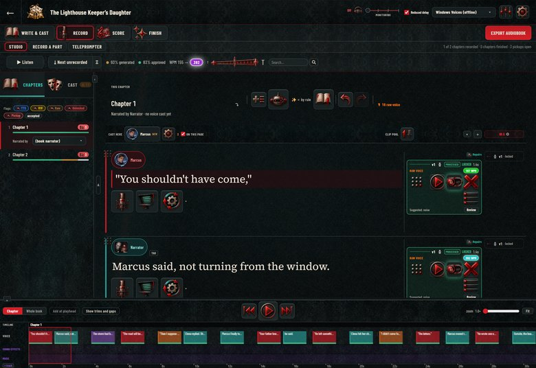
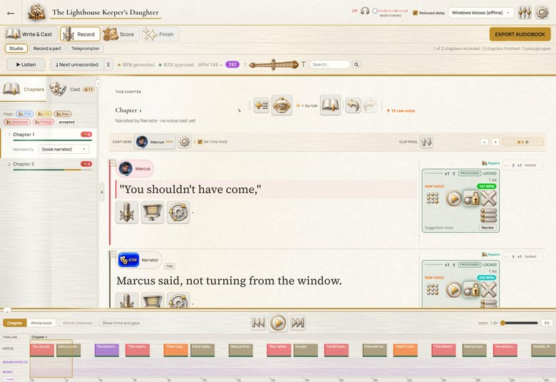
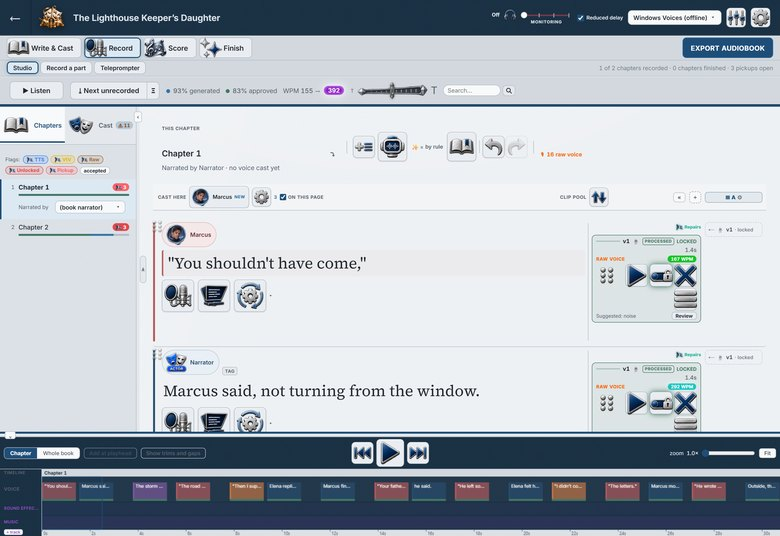
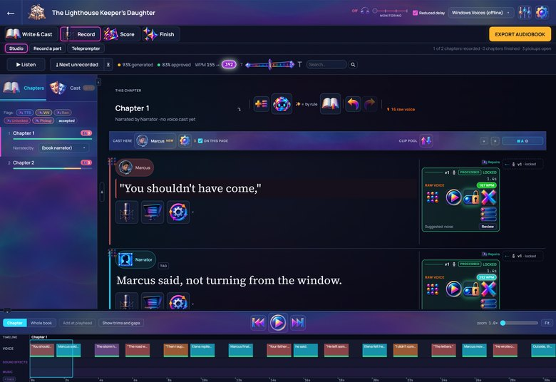
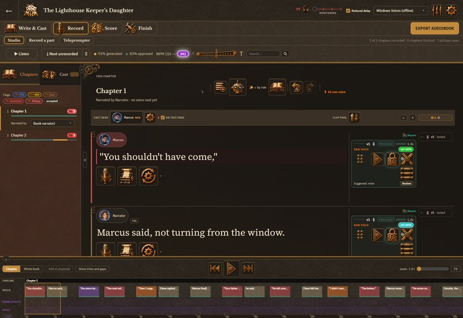
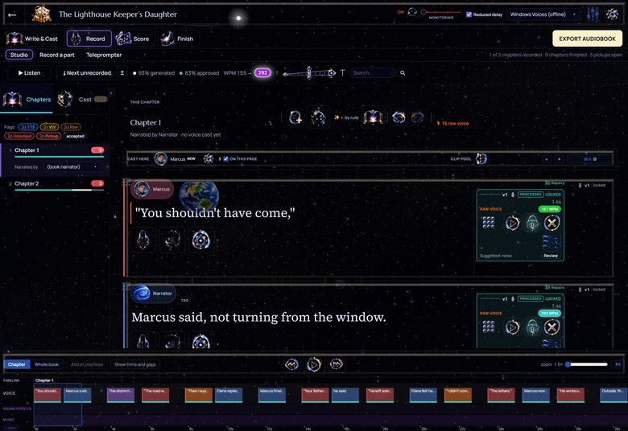
Add-on
Our online storage option. It carries your books between your own computers. Put a book in Nebula from any of your linked computers and take it down on another, whether or not the first one is on.
Anything you put in Nebula is locked before it leaves your computer, with keys that exist only on your own computers. We cannot open it, then or later. It is not a backup: the master copy of your work stays on your own disk.
Nebula 25 at $7 a month, Nebula 100 at $13, Nebula 500 at $21, or yearly at half price. An add-on to a paid plan, canceled on its own. When Nebula ends you have 60 days to take your books down.
Share a single book or a single file by a link that carries its own key. Whoever holds it can download that one thing and nothing else, until it expires, reaches the download count you set, or you stop it.
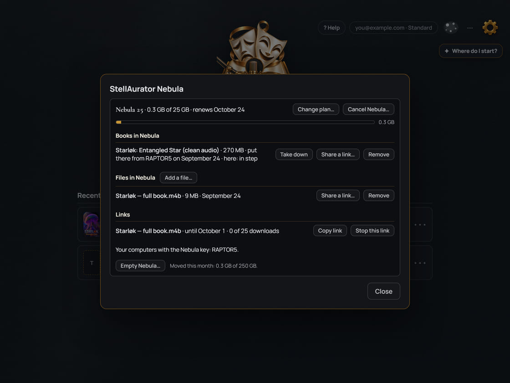
Pricing
Try everything for seven days with no card. Then $29 a month, or $290 a year with two months free. One plan, every feature, three of your computers.
No card. Nothing is charged when it ends.
Cancel anytime, in two clicks.
Two months free.
Your work remains yours. Cancel whenever you want: your projects and recordings stay on your computer, and StellAurator never uploads your manuscript to us.
Questions
Yes, as they land. Every recording is checked for clicks, pops, hard P sounds, breaths, hum and background hiss, the fixes are suggested under it, and Review plays the fixed recording right away. Finish does the same for a whole chapter, checks it against Audible’s rules, and saves it. Every fix can be undone, and the original is never changed.
No. StellAurator is a recording studio. Computer voices and voice changing are optional, and twenty-six voices come with it and work without the internet. A paid voice service is needed only for its own voices or to turn your reading into a character’s voice, and it bills you directly. Get an ElevenLabs account if you want one. StellAurator is an independent affiliate of ElevenLabs and is paid a commission if you subscribe after following this link. You can also go to elevenlabs.io directly.
Nothing is charged: we never asked for a card. When the trial ends, your books stay on your computer and still open and play. Recording, generating and editing wait for a plan. Subscribe when you want to carry on recording, editing and exporting.
No. Your projects, recordings and finished files are files on your own computer and nothing is ever deleted. If you have ever paid for a plan, saving your finished files stays unlocked for the work you made.
Anytime, in two clicks on your account page. Your plan stays active to the end of the current billing period.
Yes. What you make is yours, and the files are the ones Audible’s ACX and the other stores ask for. You are responsible for the rights to your text and to any real person’s voice you use. Files with computer-generated narration are marked that way, and Audible’s ACX does not accept computer-generated narration.
No. It stays on your computer. Text is sent only to the voice and AI services you choose to connect, under your own account with them.
Three, for one person. The studio lists them under Settings, Account, and you can remove one to make room for another. Link them and you can send a book from one to another.
The installer is signed, so Windows shows the publisher when you run it.
Yes: 64-bit Windows 10 or 11.
No card required. A practice book comes with the studio and walks you through casting, recording, clean-up and saving your files.
The installer is signed, so Windows shows the publisher when you run it. 64-bit Windows 10 or 11.